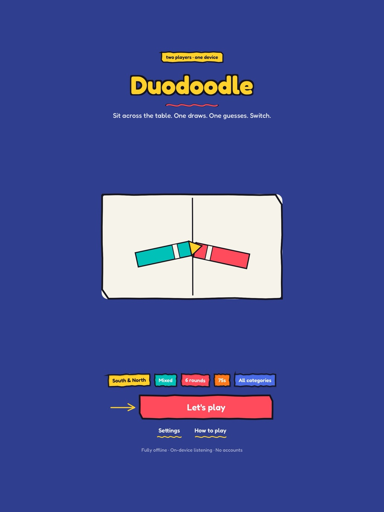
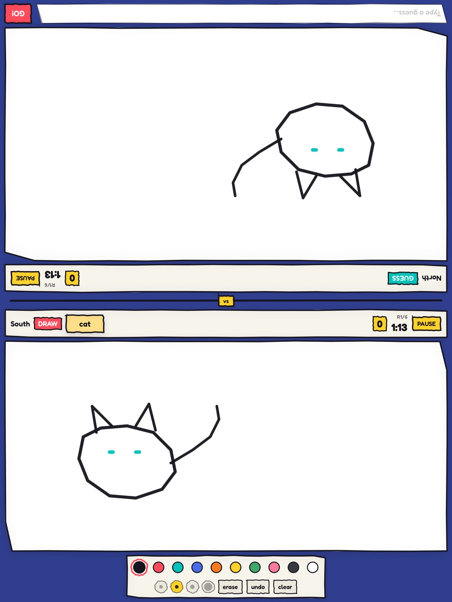
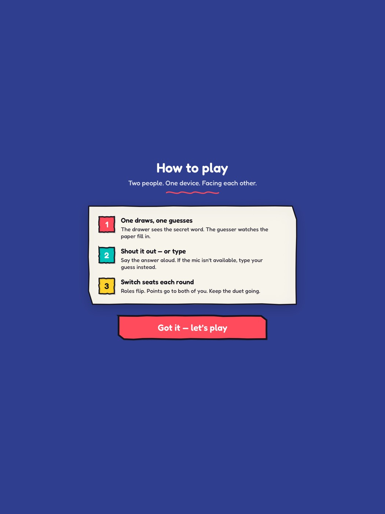
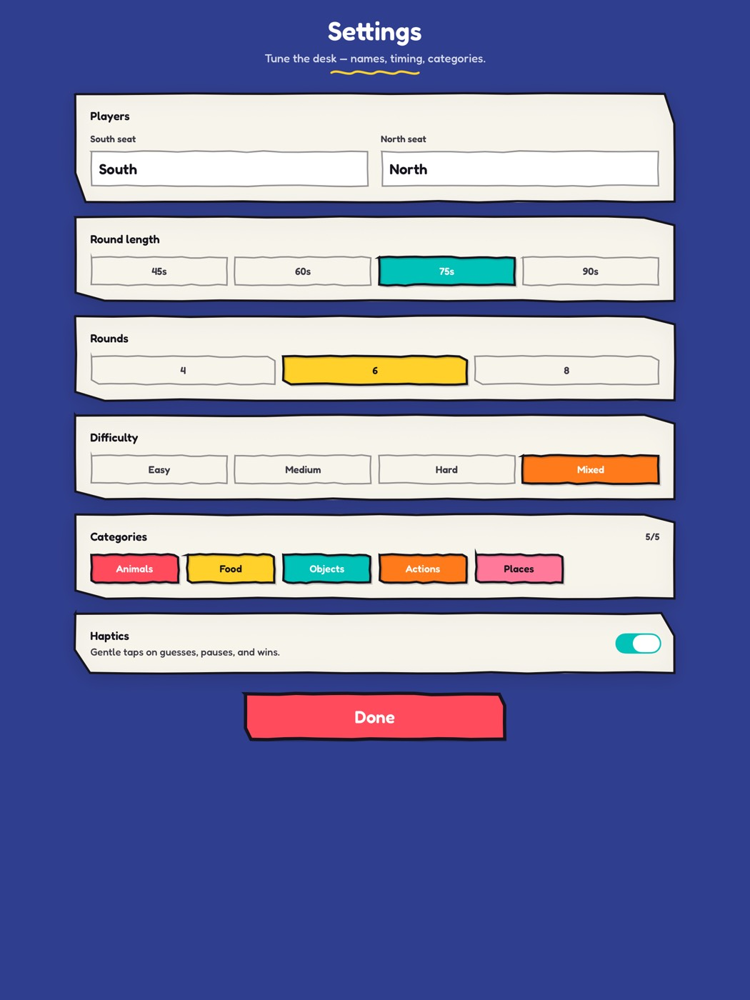
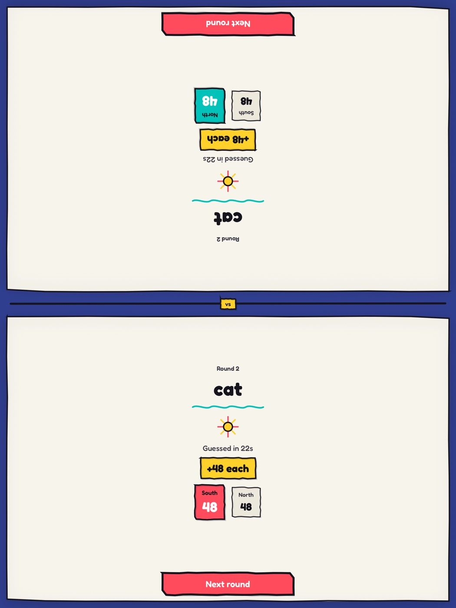

One device, two seats
Sit on opposite sides of a single iPhone or iPad. Each of you gets your own half of the screen, right-side up, so you can face each other across the table.
two players · one device
Sit across the table. One draws. One guesses. Then you switch.





Sit on opposite sides of a single iPhone or iPad. Each of you gets your own half of the screen, right-side up, so you can face each other across the table.
The drawer gets a secret word and a ticking clock. The guesser watches the sketch and says the answer out loud. If shouting isn’t convenient, you can type the guess instead.
Score the round, change roles, and keep going. Set the number of rounds, the timer, the difficulty, the word categories, and both of your names in Settings.
No accounts, no Wi-Fi, no lobby. Voice guessing is recognized on the device and is never sent to a server. You can play in a kitchen, a waiting room, or a place with no signal at all.